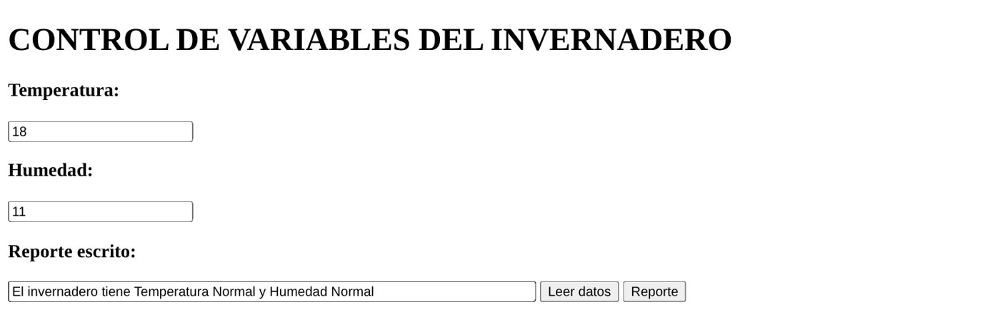
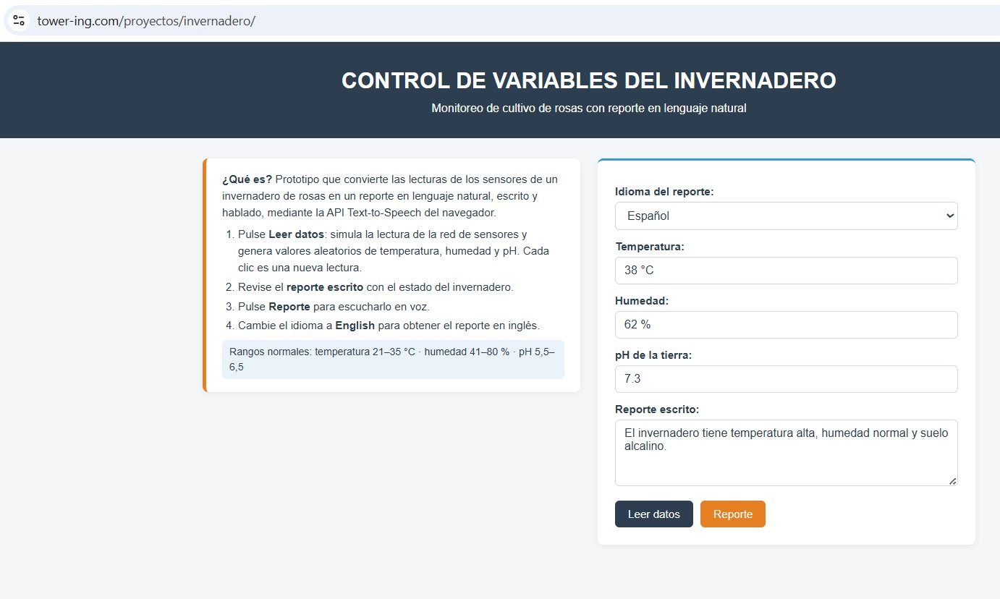

Caso de estudio
Un invernadero de rosas de exportación
El invernadero controla la temperatura, la humedad y el pH de la tierra mediante una red de sensores que lee constantemente las tres variables.
La empresa no quiere que los ingenieros interpreten los datos a su juicio: busca que una máquina exprese en lenguaje natural el estado del invernadero.
Completar el proyecto base
El proyecto entregado reportaba la temperatura y la humedad. La empresa solicitó:
- Incorporar la variable pH de la tierra.
- Emitir el reporte en otro idioma (inglés).
Rangos con los que el sistema interpreta cada variable
| Variable | Bajo | Normal | Alto |
|---|---|---|---|
| Temperatura (°C) | ≤ 20 | 21 – 35 | > 35 |
| Humedad (%) | ≤ 40 | 41 – 80 | > 80 |
| pH de la tierra | < 5,5 · suelo ácido | 5,5 – 6,5 | > 6,5 · suelo alcalino |
Descripción del proyecto
Es una aplicación web que simula la lectura de la red de sensores, interpreta cada valor y genera un reporte en lenguaje natural, escrito y hablado, en español o en inglés. La voz se produce con la Web Speech API, un servicio cognitivo de conversión de texto a voz (Text-to-Speech) incorporado en el navegador, que no requiere clave ni servidor.
index.html
Interfaz: selector de idioma, campos de las tres variables, reporte escrito, botones e instrucciones de uso.
script.js
Simula los sensores, clasifica cada variable, construye la frase en el idioma elegido y la envía a la API de voz.
estilo.css
Encabezado, tarjetas, botones diferenciados y distribución adaptable a teléfono.
speechSynthesis
Convierte el reporte escrito en voz con un idioma asignado: es-ES o en-US.
Trabajo realizado
pH de la tierra
Se agregó el campo en la interfaz, la simulación de lecturas entre 4,0 y 8,0 y la función que lo clasifica:
function estado_ph(L) {
if (ph < 5.5) return L.pAcido;
if (ph <= 6.5) return L.pNormal;
return L.pAlcalino;
}
Reporte en inglés
Un diccionario reúne todos los textos en español e inglés. Al cambiar el selector se traducen la interfaz, las instrucciones y el reporte, y la voz habla en el idioma elegido:
var mensaje = new SpeechSynthesisUtterance(texto); mensaje.lang = idioma().voz; // "es-ES" o "en-US" speechSynthesis.speak(mensaje);
Error en los rangos del proyecto base
Las condiciones del tipo 14<temperatura<=20 no funcionan en JavaScript: 14<temperatura da verdadero o falso (1 o 0), que siempre es ≤ 20. El sistema nunca reportaba valores bajos: con 18 °C y 11 % decía «normal».

Proyecto base: 18 °C y 11 % reportados como normales
Se reescribieron las condiciones en orden (≤ 20, ≤ 35, mayor) y las lecturas se generan de nuevo en cada clic.
Diseño e instrucciones de uso
El proyecto base enlazaba una hoja de estilos que no existía y se mostraba sin formato. Se creó estilo.css, se añadió un cuadro de instrucciones (también traducido) y un botón de descarga del proyecto.

Interfaz final publicada en tower-ing.com
Funcionamiento paso a paso
Leer datos
Reporte escrito
Reporte hablado
Pruebas de valores límite
Como las lecturas son aleatorias, se verificó cada frontera de los rangos asignando los valores directamente. Los seis casos dieron el reporte esperado, y sin errores en la consola del navegador.
| T (°C) | H (%) | pH | Reporte obtenido | Resultado |
|---|---|---|---|---|
| 15 | 10 | 4,0 | temperatura baja, humedad baja y suelo ácido | Correcto |
| 20 | 40 | 5,4 | temperatura baja, humedad baja y suelo ácido | Correcto |
| 21 | 41 | 5,5 | temperatura normal, humedad normal y pH normal | Correcto |
| 35 | 80 | 6,5 | temperatura normal, humedad normal y pH normal | Correcto |
| 36 | 81 | 6,6 | temperatura alta, humedad alta y suelo alcalino | Correcto |
| 40 | 100 | 8,0 | temperatura alta, humedad alta y suelo alcalino | Correcto |
Bondades de la computación cognitiva en la empresa
Objetividad
Una sola regla interpreta cada lectura. Desaparece el criterio individual de cada ingeniero, que es lo que pidió la empresa.
Accesibilidad
El reporte hablado llega a operarios con las manos ocupadas o lejos de una pantalla, sin conocer los rangos técnicos.
Multilingüe
Una empresa exportadora puede comunicar el estado del cultivo a clientes y auditores internacionales.
Bajo costo
La capacidad cognitiva se consume como servicio (API), sin desarrollar modelos de voz propios.
Relación con los recursos de la unidad
La conferencia de CENTRUM PUCP (2017) aborda la transformación de las organizaciones en la era cognitiva, y el documental de DW Español (2021) muestra cómo las redes de sensores generan datos de forma continua que deben convertirse en decisiones. El invernadero reproduce ese esquema a menor escala: sensores que producen datos y un sistema que los traduce en un mensaje útil para quien debe actuar.
Limitaciones y mejoras
- Las lecturas son simuladas: el siguiente paso es conectar sensores reales que publiquen en la nube.
- La interpretación usa reglas fijas; con un histórico de datos podrían entrenarse modelos que anticipen riesgos.
- Las voces dependen del navegador; servicios en la nube como Google Cloud Text-to-Speech ampliarían idiomas y calidad.
Aplicación y descarga
El proyecto está publicado en tower-ing.com y puede descargarse completo (index.html, script.js y estilo.css) desde Google Drive.
Conclusiones
- El proyecto cumple lo solicitado por la empresa: incorpora el pH y reporta el estado del invernadero en español y en inglés, por escrito y en voz.
- Revisar el código base permitió corregir un error que ocultaba las condiciones de temperatura y humedad baja, precisamente las que el sistema debía advertir.
- La API Text-to-Speech convierte la interpretación de los datos en un mensaje que cualquier persona del equipo puede recibir.
- Consumir capacidades cognitivas como servicio permite resolver un requerimiento real con poco código; su evolución natural es integrarse con sensores reales y servicios en la nube.
Referencias
CENTRUM PUCP. (2017). IBM Perú y su transformación digital en la era cognitiva – XII Semana Internacional [Video]. YouTube.
DW Español. (2021). La ciudad que lo sabe todo sobre ti | Big Data: ciudades del futuro [Video]. YouTube.
MDN Web Docs. (s. f.). Web Speech API. Mozilla. https://developer.mozilla.org/es/docs/Web/API/Web_Speech_API